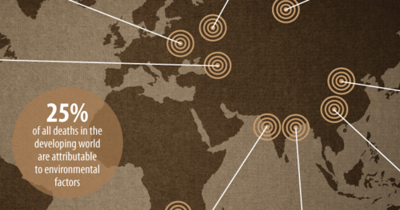

Fri, 28 Jan 2011 03:22:40 · Infographic · environment · pollution · china · russia
Most Polluted Places in the World

Latest report released by WorstPolluted reveals top ten of the world most polluted cities. Two cities in China, Tianyin and Linfen, made it to the top three, but guess which place is most polluted? Hint, not your usual hangout, that’s for sure!